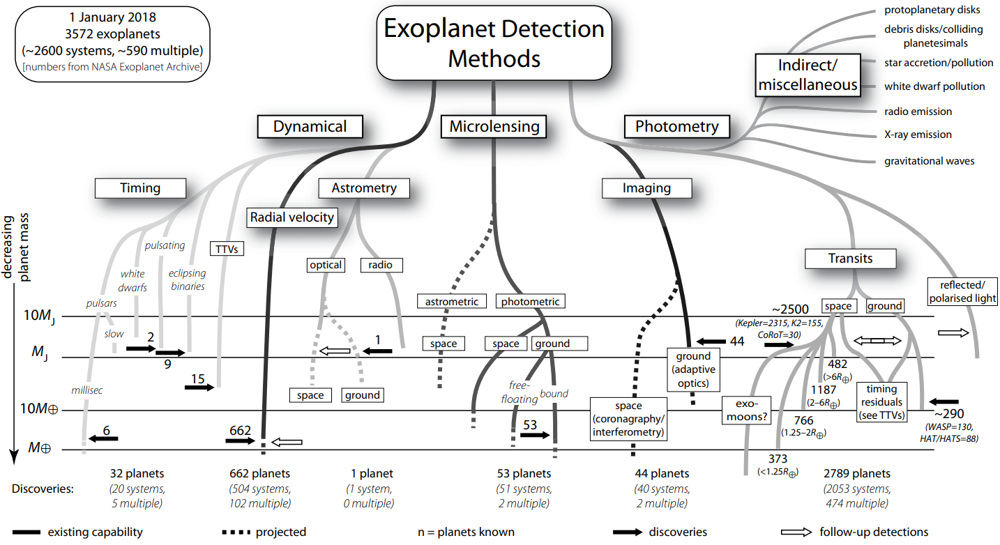
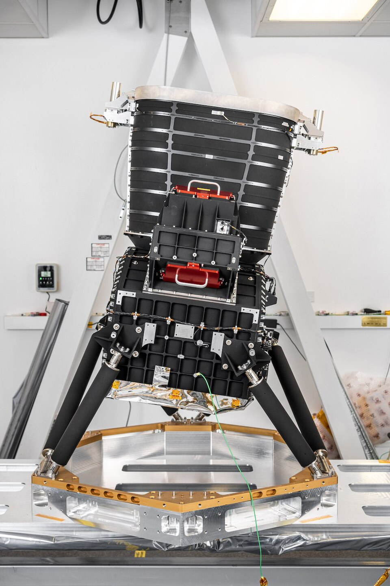
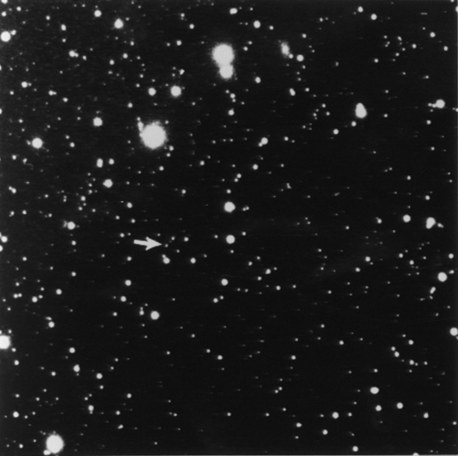
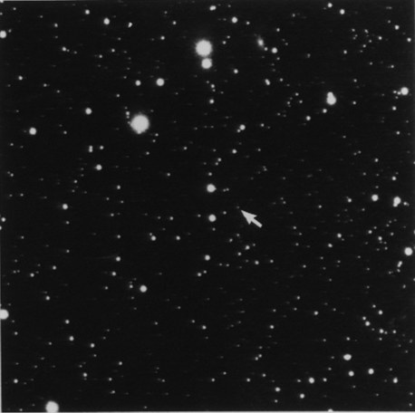

a story in pictures · 15 minutes
A camera for planets you cannot see
How astronomers photograph worlds too faint to photograph, and what one patient infrared camera, SPHEREx, adds.
Jessica Syafaq Muthmaina · MSc Astrophysics and Cosmology, Padova
tool by Observationally Speaking, with Joowon Sohn, NASA Space Apps Milano 2026
yourastro.space/SPHEREx
the problem
Photograph a firefly next to a lighthouse
This is the Earth beside the Sun, seen from 10 parsecs.
the trick
Don't photograph the planet. Photograph what it does to its star.
- 1952Otto Struve: watch the star wobble in colour, and watch it dim.
- 1963Van de Kamp sees Barnard's Star wobble. Ten years later, the wobble is his telescope.
- 1992The first planets, around a pulsar, a dead star.
- 199551 Pegasi b, the first around a star like the Sun.
- 20266,470 confirmed planets (NASA Exoplanet Archive, 15 November 2026).
1the light meter
Transit: a shadow in the light meter
When a planet crosses its star, the star gets a little darker.
2white balance
Radial velocity: the colour that wobbles
The star circles too. Towards us its light is a little bluer, away a little redder.
3camera shake
Astrometry: the star that shakes
Seen from above, the same wobble is a tiny circle on the sky.
The setting that fooled van de Kamp. In space, Gaia does it right. Gaia DR4, 2 December 2026. So far, 8 planets.
4the lens hood
Direct imaging: put your thumb over the Sun
A mask, the coronagraph, hides the star. Adaptive optics removes the blur of the air.
5the zoom lens
Microlensing: gravity as a zoom lens
A star passing in front of a farther one bends and magnifies its light.
A planet around the lens adds a short blip, hours to days, once.
6the clock
Timing: a clock that runs early, then late
A pulsar flashes more steadily than any clock. A planet makes the flashes arrive early, then late.

the whole camera menu
Each setting sees a different slice
Planet mass goes down the page, from 10 Jupiters to 1 Earth. Each branch is one setting.
Dynamical: timing, radial velocity, astrometry. Radial velocity reaches down to Earth masses.
Microlensing: planets far from their star, even with no star.
Photometry: transits for small planets, imaging only for the heaviest.
2018: 3,572 planets. Today: 6,470.
Every camera has blind spots. An empty corner is the camera's blind spot, not an empty sky.
now, a different camera
SPHEREx: a slow camera with 102 colours
- Launched March 2025, NASA
- The whole sky every six months
- 102 colours of infrared, 0.75 to 5 µm
- Big pixels, 6.15″ each. Blurry, but patient.

the oldest trick
Two photos, one flip
1930: Tombaugh flips two plates six days apart. One dot jumps. Pluto.
Now real SPHEREx photos, one per six-month pass. Red marks: where Gaia says the star should be.
Barnard's Star, the star of the 1963 false alarm. 10.4″ a year, walking exactly where Gaia says.
And it does have planets: four, found in 2024 and 2025 by radial velocity, each at least about a third of an Earth.


23 and 29 January 1930, blinkingClyde Tombaugh, Lowell Observatory, public domain
why 102 colours matter
Night vision for cold worlds
The same patch of sky in the bluest detector. Nothing there.
The reddest detector. Something appears, and walks.
WISE 0855, the coldest brown dwarf known: about 250 K, 2.3 pc away. A thermal camera finding a cat in the dark.
Brown dwarfs: heavier than planets, too light to be stars, about 13 to 80 Jupiter masses. Just above the top line of the figure.
the honest answer
Can this camera find a planet?
Around other stars: no. A fraction of a pixel from a star 10 billion times brighter.
A Planet Nine: probably not. Best case AB 18 to 21 near 1 µm. One SPHEREx photo reaches about AB 17. Motion is easy, faintness is the problem.
What it can do: catch the neighbours in between, and show any planet's host star in 102 colours.
Grey surface assumed, methane makes a real one darker. SPHEREx depth is a published forecast, not our measurement.
your turn
yourastro.space/SPHEREx- Type a planet's host star, like TRAPPIST-1 or Barnard's Star, under your own position.
- Pick one of the five test objects and press play.
- Hide a fake planet in the real images. Can your friends find it?
Which camera will take the first photo of another Earth?
SPHEREx images NASA/JPL-Caltech/IPAC via IRSA · Gaia DR3 ESA/Gaia/DPAC · planet counts NASA Exoplanet Archive, 15 Nov 2026 · Fig. Kaushik, Mattoo and Rastogi 2024, CC BY 4.0 · built with Claude (Anthropic), checked by me
scan to open on your phone